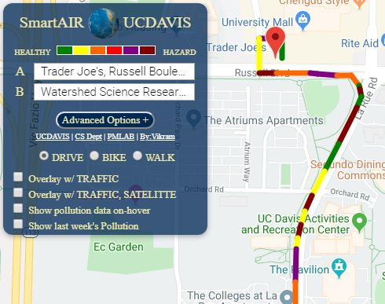
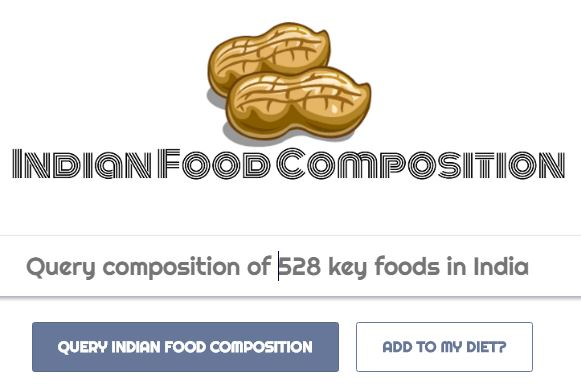
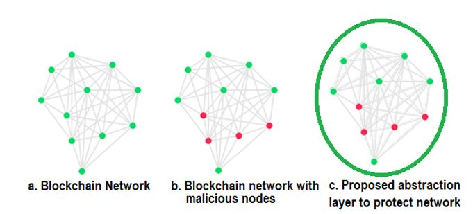
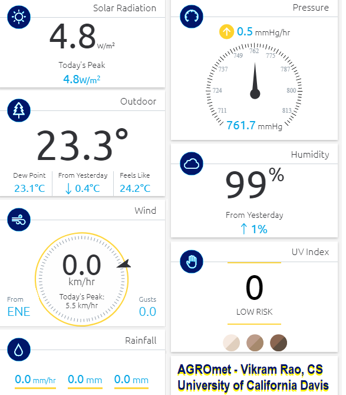
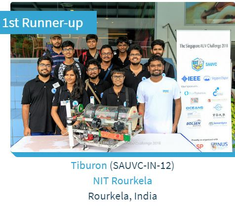
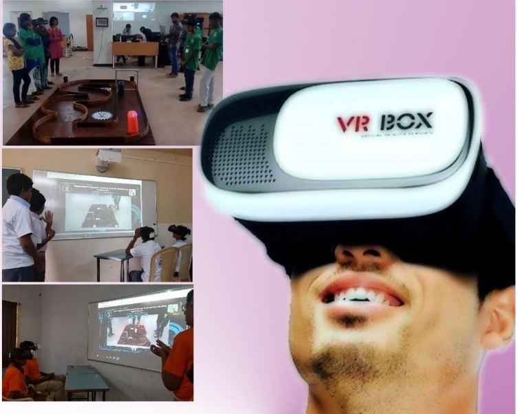
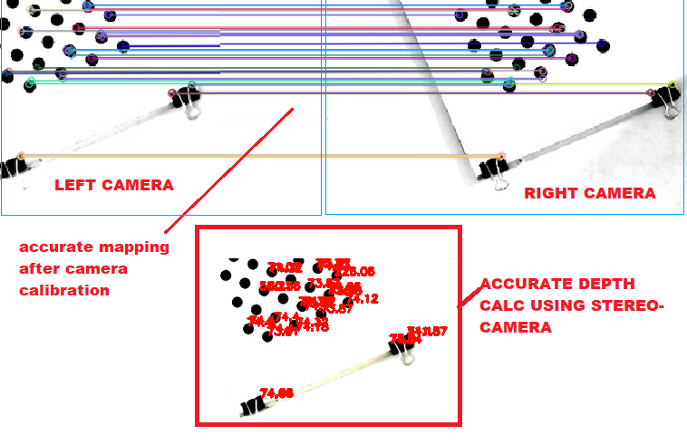
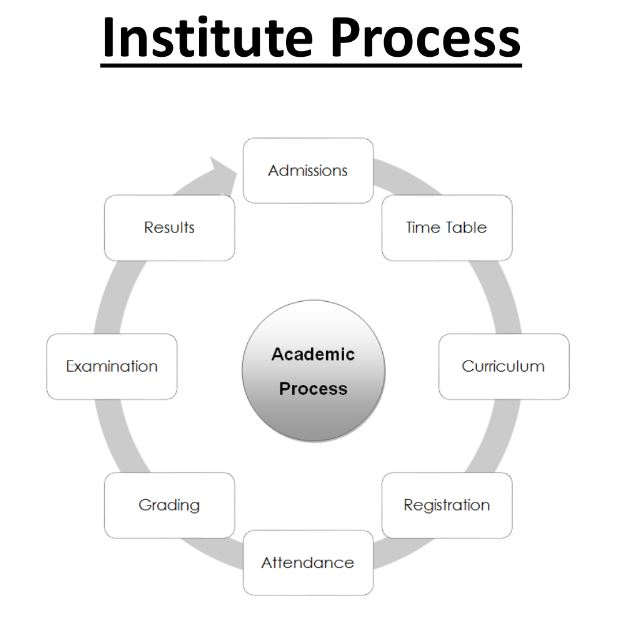

Vikram Rao here, Warm Welcome!, I am master's student at University of California Davis. Pursued innovative projects in IoT, robotics, blockchain, wireless networks, VR/AR, AI/NLP areas, So dont forget to scroll till the end!
I am Microsoft Certified Professional with 4-years experience in s/w project planning, engineering, coding, R&D
Experienced in managing complete SDLC cycle of large-scale distributed systems (such as ERP, CMS & MIS systems).
I have been working on projects leveraging Amazon AWS, Azure & Google Cloud services in projects
Languages Python, C#, PHP, Java, SQL, C++, Javascript, R, HTML/CSS
PlatformsGoogle Cloud (AutoML, TensorFlow, Keras), Azure, .NET MVC, Amazon AWS
Programming Data science (Python, R), Amazon Alexa, Web services(.Net/MSSQL, PHP/MySQL), Android
University of California Davis, Computer Science
Master's degree, SEP 2019 ~ DEC 2020
National Institute of Technology India, Computer Science
Bachelor's degree with Honors, 2010-14
GPA 3.75 (CGPA: 8.28/10)
SmartAIR: Application and system street-level air quality monitoring
 Live street-level air quality monitoring reveals human exposure to hazardous air pollutants while walking/biking/jogging on streets. In this project we build interactive, efficient front-end application for end-users and robust back-end framework for servers.
DESI Searchengine : Amazon Alexa-based INDIAN FOOD search engine using AI/NLP Models
 Alexa/Web search detailed food composition among 528 key Indian foods using DESI with 89% relevance. DESI uses NLP

GUARDIAN : Blockchain-based fault tolerant abstraction layer for IoT Swarm Prototyping reliable blockchain-based abstraction layer for IoT swarm to protect swarm against misleading, malicious IoT's
 (Dean's Award) e-AGROmet IoT : Weather station apparatus with online dashboard to forecast weather using AI : Developed multi-model Agro-meteorological apparatus to monitor growth of Algal bloom and introduced AI to predict weather
 (Won 2nd among 13 countries) Underwater Robot : IEEE Singapore underwater robot challenge I was mentoring and sponsoring Team Tiburon in many purchases, guiding my juniors in right hardware selection(Sensors,Kits) and software hacks (Embedded-C). The students worked on it and eventually won laurels (in NUS Singapore UAV-2018 challenge and were selected in U.S. Naval Research Robosub-2019)

(Spot Award) Robots with VR/AR : Virtual Reality based mobile robots racing GAME for engaging school kids : Developed cloud-controlled robot and built VR App, so schools kids located ~372 miles apart can play with our robot virtually!
Designed intutive DIY(Do-it Yourself) manual target for K-12, college students or enthusiasts.
After reading this manual users can race robot over cloud, or they can build robots by themselves.
Game comes with VR capability!
 (IEEE published) Robust, low-cost 3D Stereovision for Robotic Arms [*]
We designed and developed bio-inspired model to calculate depth parameter. In this experiment we
try to estimate depth using two camera just like two eyes in animals.
With this stereo-vision setup robotic arm can maneuver with 3D X,Y,Z coordinate.
We successfully able to maneuver robot in 3D with 0.5 mm accuracy.Our result and analysis shows that
our model is superior to many other models.
Work published in IEEE (first author):
Rao, Vikram and Singh, M Low-Cost Computer Vision Based Real-Time 3D Localization of Object for Robotic Applications. Published in IEEE INDICON 2018 Proceedings
(Best project Award, Nominated) Bio-AUTH gadget : Secure fast friendly fingerprint attendance system for employers Developed k−d tree based algorithm to search faster in 0.3s. With dashboard to track working hours, late and absent employees
 (Chairman's Recognition) NITR-Info system : Official University Website with MIS used by students, faculties every day Developed and directed official University Website and its MIS from scratch in .NET/C#.